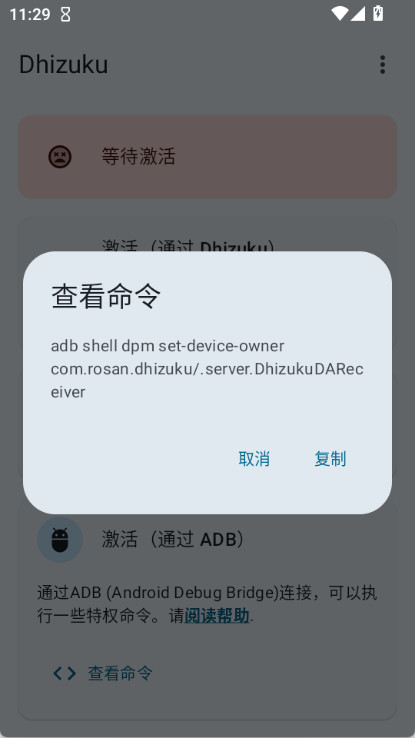

把 Dhizuku 嵌进 Android 新机初始化链：一次激活，全链通
四五台测试机加偶尔帮朋友初始化设备，以前每台半小时 adb 命令轰炸，现在 Dhizuku 往中间一插，一条命令激活，后面所有设备管理员工具自动拿授权。
我手头常年有四五台 Android 测试机，加上偶尔帮朋友初始化刚拆封的新设备。以前每台新机从开完机到能用，大概要半小时 adb 命令轰炸——挨个连电脑、切换 USB 调试模式、输授权码，中间换三个工具各跑各的 adb，漏一条就得重来。现在这条链串起来后，Dhizuku 往中间一插，激活一次通全链。
旧流程：三个工具各跑各的 adb，每台十分钟起步
先说以前怎么干的。主力工具就三个：Hail（冻应用、清后台）、Amarok（隐藏应用）、Shizuku（给 shell 层提权）。每台新机开完机：
- 先装三个工具的 APK；
- 连电脑跑 Shizuku 的 adb shell 授权命令，等手机上弹授权码、输入、确认；
- 再跑 Hail 的设备管理员设置命令，又是一套 adb + 授权码流程；
- Amarok 同样要单独申请设备管理员权限；
- 最后分别进三个工具的设置，开自启、加电池优化白名单——ColorOS 和 MIUI 这类国产系统还要额外去自启动管理和后台冻结名单里手动放行，漏开一个下次冻应用就报服务不可用。
光授权环节就要十分钟，而且每次换设备、换测试版本都得重来一遍。中间最痛苦的是 adb authoration 超时——USB 调试模式切到文件传输、数据线松一下、或者厂商定制系统的 adb 弹窗延迟，都得从头跑命令。
新流程：Dhizuku 做权限中枢，一次激活通全链
Dhizuku 在这条链里只干一件事：激活成设备所有者，然后给其他工具分发设备管理员权限。我把它嵌到新机初始化的第一步，整个流程变成：
装 Dhizuku APK → 清账号 → 一条 adb 命令激活 Dhizuku → 装 Hail/Amarok/Shizuku → 各工具首次使用时 Dhizuku 自动弹授权请求 → 点确认就通。
它的官网有完整的安装指南，APK 约 2.5 MiB，从Dhizuku下载拿到后走标准 sideload 流程两分钟就能装上。装完别急着点激活——Dhizuku 的下载渠道说明里反复强调，激活前有一道必做的工序：清账号。
实操细节：最容易断链的两个环节
整条流程里最容易卡住的，一个是激活前的账号清场，另一个是激活后的后台保活。这两个环节我踩过的坑最多，单独拎出来说。
环节一：清账号——激活失败的头号原因
激活 Dhizuku 成设备所有者，系统要求设备上没有任何账号。这条规则是硬性的，跑 adb 命令时报「Not allowed to set the device owner because there are already some accounts on the device」就是栽在这。
处理思路只有一个字：清。具体操作：
- 先用 Accounts 工具导出全部账号清单（连隐藏账号都能扫出来），摸清有多少要处理；
- 能注销的注销，不用的卸载，常用但带账号的用 Shizuku 先冻结；
- 清完再刷一遍 Accounts，列表为空才算过。
国行设备最烦——vivo 账号、小米账号这类系统级账号，设置里根本找不到退出入口。社区里验证过几条路：先退出厂商的云服务和应用商店，部分账号会跟着注销；还不行就用 Shizuku 的 shell 权限冻结它所属的应用，账号随应用消失；实在清不掉就改走 Profile Owner 路线，那条路不要求清空账号，绕过去就行。路线怎么走、参数怎么设，Dhizuku文档里都写了。
清完后跑激活命令，命令行输出以 Success 开头才算真成功。状态卡从「等待激活」变成已激活状态，同时验证 Hail 里能选到对应工作模式——三条都中就说明这条分发链路通了。

环节二：后台保活——别让系统把中介服务杀掉
Dhizuku 的价值在于「随时响应其他应用的请求」，这要求它的服务一直活着。但 Android 系统杀后台的默认策略，恰好是它最大的敌人。
我装完 Dhizuku 后固定做三件事，每次都一样：
- 开通知权限：Dhizuku 靠前台服务维持常驻，前台服务的常驻通知别关——部分系统上关通知等于放任系统随时回收服务，嫌碍眼可以在通知渠道里降级为静默，别彻底禁用；
- 开开机自启：Dhizuku 自带开机广播权限，但国产系统要去自启动管理里手动放行；
- 设电池优化白名单：设置 → 应用 → 电池 → 允许后台活动，ColorOS/OriginOS/MIUI 还要额外在后台冻结名单里放行。
验证也简单——重启一次设备，不用先打开 Dhizuku，直接打开 Hail 做一次冻结操作。能成功就说明开机自启和后台保活都到位了；如果报服务不可用，回到上面三项逐项检查。

效果与边界：省了什么，什么时候不划算
这套流程跑下来，每台新机的 adb 命令从 3~5 条降到 1 条，授权环节从十分钟缩到两分钟，省了两次手动进应用设自启和电池白名单。更重要的是，Dhizuku 的激活记录只做一次——后面换工具、换版本不用重新激活，授权记录不丢，各工具续用就行。
但这套流程也不是万能的。只有一台设备、或者只需要 Shizuku 的 shell 层权限（比如跑脚本、自动化操作），那 Dhizuku 这条链就是多余的——激活设备所有者本身是个重操作，不值得。另外 Android 15 上部分厂商收紧了设备所有者的激活条件，某些机型可能卡在清场环节，这时就别硬磕，回退到 Shizuku 单独授权就行。
这条整合链我跑了快一年，从最初帮朋友初始化一台小米 13 Pro 开始，到现在四五台测试机每台都是这条流程，中间没出过授权断链的问题——Dhizuku 往中间一插，整个链就稳了。文中提到的 Dhizuku 安装指南、激活排查、后台保活这些资料，在 GitHub 上有完整维护，国内访问慢的话也可以去 Gitee 或 GitCode 备份镜像。